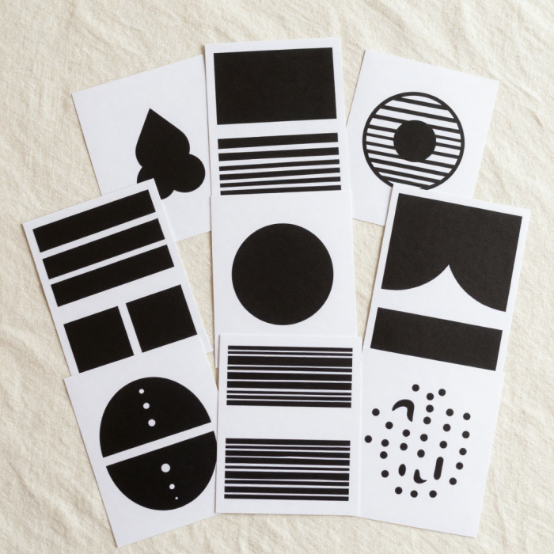

Acompanhe cada marco. Registre cada conquista. Estimule com afeto e intenção.
Explorar o 1º MêsCada toque, cada olhar e cada palavra está moldando a arquitetura cerebral do seu recém-nascido.
Os principais marcos e desenvolvimentos do primeiro mês.
Explore a linha do tempo acima para descobrir como o cérebro e o corpo do seu bebê se desenvolvem nos primeiros 30 dias.
O cérebro forma milhões de conexões. Experiências sensoriais positivas são cruciais.

Ofereça em livre demanda. Frequência de 8 a 12 mamadas/24h no início. Sinais de saciedade: mãos relaxadas e solta o peito espontaneamente. Não se esqueça de beber muita água!
Guiada pelo bebê. Ciclo básico: mamar → acordado brevemente → dormir (2-3 horas). Flexibilidade é chave, a rotina serve como guia, não como regra absoluta.
O *baby blues* afeta até 80% das mães. Noites serão longas, o bebê pode parecer "estranho" com bolinhas e espirros. Nem sempre o amor é instantâneo — o vínculo se constrói dia a dia.
Sessões de estímulo devem ser curtas (5-10 min). Evite telas, barulhos altos ou luzes piscando. Responsividade fortalece o apego seguro.
Garanta acesso exclusivo a ferramentas que vão ajudar você a organizar a rotina, registrar mamadas, fraldas e cuidar da sua saúde mental durante os primeiros meses.
Entrar na Área de Ferramentas